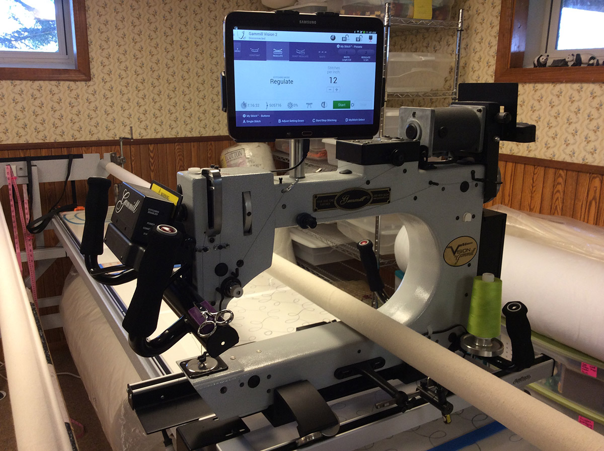

About
Mermac Design offers professional longarm machine quilt finishing services, both hand-guided and computer-guided with an Intelliquilter® computerized system, and longarm machine rental for quilters who want to say, “I did it myself.”
Merrilee MacWilliam, owner and operator of the Mermac Design Quilt Studio, has been a professional longarm quilter for 17 years, with more than 2000 quilts completed and hundreds of satisfied customers. Merrilee’s experiences with design choice, thread choice, machine set up and quilt management all go to work for you when you bring her your quilt for professional finishing. If finishing yourself, she is there to guide your choices in order for you to achieve the best possible outcome.
Always with the future of quilting in mind, we now have a Nolting NV long arm quilting machine with the newest Intelliquilter computerized quilting system installed for professional finishing. Whether you are interested in an all over pantograph or custom block by block creativity, there are literally thousands of designs to choose from. We have many installed designs in the studio, but the designs of your choice are just a download away!
The Mermac Design Quilt Studio is located on the lower level of our home, accessed by a stairway. It is a comfortably finished space, both heated and cooled for the season. The studio is organized with many tools to assist in all aspects of quilt finishing- marking tools, templates, stencils and pantographs- all of which are available to customers.
Our Work
Custom Borders, blocks and sashing with Intelliquilter
Summer Solstice by Judy Neimeyer, with custom blocks and borders
Detail of Summer solstice custom feather set in progress.
Floral Wave pantograph by Anne Bright with wool
Quilting Services
Whether you are after the perfection of computer guided stitching or the more edgy free form of hand guided quilting, Mermac Design will work for you. With the Intelliquilter® Computerized system on our Nolting NV 24, literally thousands of design choices are available to you. Many holiday, novelty and texture designs are currently available in our library. Other custom options are available for purchase and immediate download from the online libraries of numerous designers. Whatever your theme, “IQ” can match it! Prices vary depending on the density, complexity and set up time required. Please see our pricing page for details.
For those who want a softer, less structured look, or specific areas outlined, hand guided options are available. We can combine computerized motifs with hand guided backfills. Mermac Design has the flexibility to finish your quilt in whatever way best enhances its beauty and functionality.
All quilting services are charged on a per square inch basis depending on the type of quilting, density of design, set up time, thread changes and detailing required. Please see our pricing page for specific details. To estimate your quilting costs, use the following formula
Length x Width = Area
Area x Price/sq.in. = Quilting Charge
Any additional services and NYS sales tax are added to all orders.
Rental

PLEASE TAKE NOTE! UNFORTUNATELY IN THE TIME OF THE COVID PANDEMIC, ALL RENTAL HAS BEEN SUSPENDED UNTIL???????? I AM A SMALL HOME BASED BUSINESS WITH BABYSITTING OBLIGATIONS THAT ARE A PRIORITY TO ME AT THIS TIME. WHILE I MISS SPENDING TIME WITH AND HELPING MY QUILTING FRIENDS, THE SAFETY OF MY FAMILY COMES FIRST. I AM STILL TAKING IN QUILTS AND RETURNING THEM “CURBSIDE” AND WILL CONTINUE TO DO SO. PLEASE CONSULT THE QUILTING SERVICES PAGES FOR PRICING. THANK YOU FOR YOUR UNDERSTANDING!
Our rental long arm machine is a Gammill Vision II 18 longarm quilting machine. Gammill is considered a leader in longarm sewing machine technology, usability, and reliability. Powered by a Samsung Galaxy tablet touch screen interface, with choices of basting, manual, regulated and “Coast” stitching modes, this Gammill is fun and easy to use. The 10’ Pro Frame will handle quilts from wall hangings to king size backings up to 108″ wide. The frame is equipped with an optional hydraulic lift system to accommodate quilters of all heights, even sitting. You, the quilter, have access to all tools the studio has to offer- stencils, marking tools, templates, pantographs and guides- as well as the advice of a quilting professional with 15 years of experience. Several hours of your time is all it takes to go from three separate layers to a quilt ready for binding and cuddling!
Scheduling Appointments
Because we are working out of our home, business is conducted by appointment only. Every effort will be made to accommodate people’s schedules, however walk ins are not available at this time. Our schedule is flexible, therefore we can accommodate evening and weekend appointments. However, please keep in mind the size of your project when scheduling an appointment. Queen and king sized quilts take several hours to complete and will not be scheduled later than 4:00 pm to be completed by 9:00pm.
Your rental time starts when you begin loading your quilt on the frame. You are charged an hourly rate in quarter hour increments. If you have design questions or want ideas to practice before you actually begin, please consider scheduling a free “pre-rental consultation”. Be ready to quilt when you arrive so planning doesn’t increase the cost of your rental.
Thread is provided by the Mermac Design Quilt Studio with over 100 colors available and is incorporated into the cost of your rental. You are not limited to one color of thread in your quilt, however multiple thread changes will add to your rental time. Batting is also available for purchase at the studio, however is not required. Please see our Thread & Batting page for more information.
Things to Know
- The studio is downstairs and is not handicapped accessible.
- This is our home and we wish to keep “shoe traffic” to a minimum. Please bring slippers.
- There is a pet if allergies are a consideration.
- We maintain a strictly smoke free environment. Please see the Quilt Preparation page for instructions on how to treat your quilt when coming from a smoking environment. Smoky clothing, coats, and quilts will not be allowed in the house. We thank you for your cooperation on this matter.
Instruction
Merrilee is available to offer many types of instruction in the studio. For 7 years, she has taught classes on free motion quilting on both a long arm machine and domestic sewing machine, as well as beginning and intermediate quilting skills. She has attended numerous classes at national quilt shows such as Machine Quilter’s Showcase in Springfield MO, Innovations Quilt Show in Tacoma WA, Machine Quilter’s Expo in Manchester NH and Quilting With Machines in Huron OH. She brings the knowledge of the top quilters- Linda Taylor, Kim Brunner, Pam Clark, Deloa Jones, Judy Woodworth and many more- back to you. As an elementary teacher, retired from the Rochester City School District, she is back in the classroom and determined that all students learn and succeed. Please contact us if you are interested in scheduling a class or presentation.
Available Instruction / Presentations
Basic Sewing / Quilting
Taught at the Mermac Design Quilt Studio, we begin wherever you are and move you forward. It can include machine management, cutting, assembling, design and color selections. This can be taught on an individual basis or in groups up to 4 people.
Free Motion Quilting / Domestic Machine
Small quilts can be managed on a domestic sewing machine. In Merrilee’s “Sewing Yoga” class, you learn how to put your feed dogs down and sew. This includes how to guide the quilt under a free motion foot, marking and design ideas.
Free Motion Quilting / Longarm Machine
Whether you want to stipple or create beautiful feathers, Merrilee can help you make it happen. Schedule time in the studio or special arrangements can be made to have an on site class with your machine.
Group Presentations
Merrilee has a vast array of quits to show, and has certainly learned a lesson from each and every one of them. Her presentation “Every Quilt Teaches a Lesson” takes you through her learning curve from her first, to where she is today.
Dream Bag
Having crafted many bags over the years, Merrilee has taken all of her favorite components and rolled them into her “Dream Bag”- you too can dream yours up any way you want. Students learn a set of skills for adding zippers, pockets, quilting and lining that can be configured into any bag they want to make. This class can be scheduled in the studio for up to 4 people or it can be offered off site to your group with a maximum of 10 people.
Quilter’s Tote
This is the large version of the dream bag. It is large enough to carry an 18″ x 24″ cutting mat and 24″ ruler, has inner “dump” pockets, an inner zipper pocket, and a top zipper closure to keep everything inside. This class can be scheduled in the studio for up to 4 people or it can be offered off site to your group with a maximum of 10 people.
Pricing
Professional Finishing
Pricing is per square inch of your quilt top. Pricing varies depending on the density and complexity of your desired design. Payment is accepted as check or cash and is expected when you pick up your quilt.
Length x Width = Area
Area x Price/sq.in. = Total Cost
(NYS sales tax is added to all orders)
- IQ Regular Pantograph $.02/sq. in. and up
- IQ Custom Blocks and Borders $.03/sq.in. and up
- Hand Guided Meander $.0175/sq.in. and up
- Hand Guided Custom $.02/ sq. in. and up
- Custom w/ Stitch in the Ditch $.035 / sq. in. and up
- Basting Only $.005 / sq. in. and up
Minimum Charges apply. Please call for a specific quote on your quilt or make an appointment for a free consultation.
Rental (Currently Unavailable)
Pricing is per hour in quarterly increments and is subject to NYS sales tax. All rentals by appointment only.
- Longarm Machine Rental $20.00 / hour
Thread
We use Omni and So Fine threads by Superior and stock over 100 colors for you to choose from. Thread is included in the cost of your professional quilt finishing or rental. Customers who choose to use threads other than what we carry in the studio are responsible for the outcome of their project.
Batting
Batting is sold off a roll by the linear inch. Batting prices subject to change without notice.
- Quilter’s Dream Cotton $.32 / inch
- Quilter’s Dream Blend 70/30 with scrim $.26 / inch
- Quilter’s Dream Blend 80/20 without scrim $.24/inch
- Quilter’s Dream Poly $.20/ inch
- Quilter’s Dream Wool $.34 / inch
Quilt Binding
Mermac Design provides a machine finished binding service. We do not offer hand finishing. See our quilt preparation page for directions on how to prepare your binding.
- Preparing Binding Strips $20.00
- Sew Binding to front or back $.10 / inch (includes machine finishing if sewn to the back of quilt)
Additional Charges
To avoid additional charges, please prepare your quilt top and backing at home. See our quilt preparation page for details.
- Piece Backing $10.00
- Press Backing $10.00
- Add to the backing $5.00 / side
Class Fees
Inquire about our latest class offerings for your group.
- Basic Sewing Lessons $15.00 / hour (one person)
$10.00 / hour each (2-4 people)
- Free Motion Quilting, Domestic Machine 3 hours / $30.00
- Free Motion Quilting, Longarm Machine 3 hours / $75.00
6 hours / $125.00 (in studio)
Off site- add $20.00
- Group Presentation 1 hour / $75.00
- Dream Bag, 6 hour lesson (includes pattern) $40.00 / person, 10 participants max
- Quilter’s Tote, 6 hour lesson (includes pattern) $40.00 / person, 10 participants max
Contact Us
If you’d like an estimate for quilting services or to make an appointment, contact Merrilee directly:
Merrilee MacWilliam
585.465.3888
Directions
We’re located on Brick Schoolhouse Road, near the Lake Ontario State Parkway, midway between Hilton and Hamlin, New York. Please be mindful that our availability is by appointment only. As you’re driving down the road, look for the barn with the giant quilt block on the front!
2127 Brick Schoolhouse Road
Hilton, New York 14468
View Larger Map